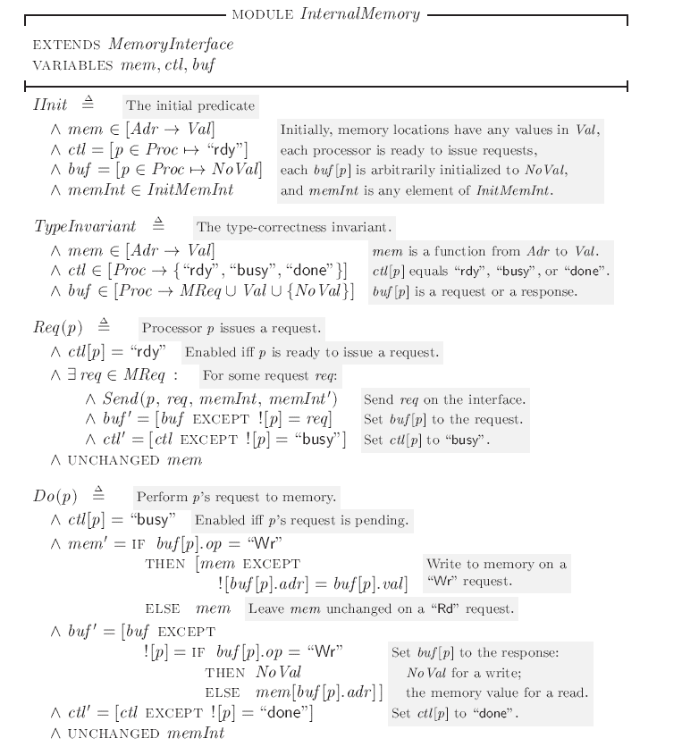

本节中我们将关注本系列中用TLA+刻画的最后一个系统，一个真实计算机中的内存系统。
一个内存系统包括一系列处理器，内存本身，以及链接处理器到内存的抽象接口，我们称之为memInt。
The Meomry Interface
首先考虑如何刻画MemInt, 在此前刻画异步接口时，我们采用了握手协议，只有在确认前一个值被接受之后，才能发送下一个值。在大多数的内存接口中，我们一般也要采用这样的设计，但在刻画内存系统时，我们只关心数据在处理器和内存间传递这一个宏观动作，而不关心数据怎样实现的细节，所以我们将类似握手协议这样的细节都抽象掉。
我们将处理器发送数据到内存的过程称为Send, 内存发送数据到处理器的过程称为Reply。处理器之间不能相互发送数据，内存一次只能给一个处理器发送数据。
我们将内存接口的状态命名为memInt,每个Send 或者 Replky 步骤的执行都会对memInt产生某种改变。但我们并不想定义这种改变的细节，在不同的内存系统中可以有不同的改变方式。为了支持这种需要，TLA+同样允许我们将运算符定义为常量。
我们可以如下定义一个带有四个参数的常量操作符：
1 | CONSTANT Send(_,_,_,_) |
我们还可以利用ASSUME 语句对Send的性质进行断言：
1 | Assume \A p,d,miOld,miNew : |
Send运算符代表了处理器p向内存发送值d的过程，该Assume语句断言了Send 表达式的值必定为布尔值，当且仅当初始状态memInt等于第三个参数miOld，且迁移后状态memInt’ 等于第四个参数miNew时，布尔值为真。
一个MemInt 的模块刻画如下：
- 使用Send和Reply 运算符可以描述MemInt 状态是如何变化的,此外我们还要声明一个常量参数InitMemInt， 来代表memInt 所有可能取的初始值的集合。
- 我们还需要定义三个常数参数，Proc，Adr，Val，分别代表所有处理器的集合，可用内存地址的集合，和某个地址可以存储的值的集合。
- MReq定义了处理器发送给内存的所有可能的请求集合。”op”字段定义了请求的类型，如果为”Rd”，则代表了读请求，读请求除了op字段只包含一个地址字段adr，代表申请读取内存地址adr中的值；op字段如果等于”Wr”，则代表写请求，写请求除了op和adr字段还包含一个val字段，代表申请向adr地址中写入值val。
- 显然一个读请求应该用想要读取内存地址中的值响应，而对于写请求，我们希望返回一个与所有读请求可能的返回都不同的值，在模块中我们用NoVal声明了这样一个值。表达式Choose x : F 等于满足表达式F的任意值。
A Lineariable Memory
完成内存接口的刻画后，我们先来考虑刻画一个较为简单的内存系统，一个可线性化的内存系统。
在一个可线性化的内存系统中，处理器p向内存发送一个请求后，需要等待收到内存的相应后，才可以发送下一个请求。在接收到来自处理器的请求后，内存要通过访问或者修改对应地址的值(我们用变量mem表示这个值)来执行请求，而在发出响应前内存随时也有可能收到来自别的处理器的请求，在可线性化的内存里，我们允许内存在收到请求和返回响应之间的任意时刻对地mem进行访问。
除了mem外，我们还需要两个变量ctl和buf，其中ctl[p]代表处理器p的状态，buf[p]代表处理器p发送出的请求或者接收到相应。
以处理器p向地址a中写入值v的请求为例,req : [op |-> “Wr”, add |-> a, val |-> v], 内存处理这个请求要经过如下三个步骤：
其中，Req(p) 代表发出请求，将ctl[p] 状态从”ready” 改为“busy”, Do(p)代表内存访问过程，将ctl[p] 状态从”busy” 改为”done”, Rsp(p)代表接受响应，ctl[p]状态从“done” 回到 “ready”。
读者可结合MemoryInterface 模块尝试自行对上述步骤用TLA+语言进行刻画，再与Lamport给出的刻画进行对比：

More about Function
为了后面刻画更复杂的内存系统，本节中将补充介绍一些TLA+中Function 的相关知识。
元组也是函数
首先，回顾一下TLA+中的元组，在TLA+中<a,b,c>代表了一个包含元素a,b,c的三元组。其实，元组在本质上也是一个函数，以<a,b,c>为例，它是一个定义域为（1，2，3）的函数，并且将1，2，3依次映射到a, b, c, 因此我们可以把函数的语法代入元组：<a,b,c>[2] = b 。
TLA+ 提供笛卡尔积运算符×, 假设 $a \in A, b \in B, c \in C$, 我们可以得到A x B x C 为包含所有三元组 <a,b,c> 的集合。
利用模块Sequence 可以把有限序列定义为元组，长度为n的序列其实就是一个定义域从1到n的函数，我们可以用函数的语法定义Sequence的运算符：
递归函数
刻画更复杂的内存系统还需要用到递归函数，递归函数在程序语言中是一个非常常用的工具，下面我们来讨论如何在TLA+中定于递归函数。
以经典的阶乘函数为例，回忆TLA+的函数表示法，我们可能会给出如下一个定义：
1 | fact == [n \in Nat |-> IF n = 0 THEN 1 ELSE n*fact[n-1]] |
但上述定义在TLA+中是不合法的，因为右边的fact并未定义就被使用。在TLA+中要使用循环定义的方式定义递归函数，一个合法的定义如下：
1 | fact[n \in Nat] == IF n = 0 THEN 1 ELSE n*fact[n-1] |
通常，定义域为S的递归函数f 都要用f[x \in S] == e 的形式来定义。
类似地，我们可以定义一个有多个参数的递归函数：
1 | Acker[m, n \in Nat] == |
A Write-Through Cache
接下来我们将定义一个简单的Write-Through 缓存，它的系统架构可参考下图:
如图所示，每个处理器p与一个本地控制器相互通信，每个控制器维护三个状态组件:buf[p], ctl[p] 和 cache[p]。cache[p]代表处理器p的缓存，buf[p]和ctl[p]与InternalMemory中的同名变量有相同的意义。控制器与主i存wmem相互通信，处理器到主存的请求都会进入队列memQ, 其队列长度为QLen。
我们先来考虑在Write-Through 缓存中所有可能的状态转移动作。
Write-Through缓存意味着每个写请求再向内存写入时同时会更新主存，因此，写请求DoWr(p)在向cache[p]中写入值时，同时也会将写请求加入memQ的尾部。当该请求到达memQ的头部时，会调用MemQWr动作将值存储到wmem之中，同时，如果有其他处理器q存有该写请求要更新地址的内存副本，DoWr(p)同样也会为其更新cache(q)。
再考虑读请求DoRd(p),它会先在cache[p]中寻找有无需要的值，如果没有，再向主存发送请求，调用动作RdMiss(p)将读请求发送到memQ的尾部，并将ctl[p]的值设置为”waiting”,当RdMiss(p)达到队列头部时，再将读取到的值加入cache[p]。
如果让MemRd 直接从wmem中取值，但Qmem队列中位于该读请求之后有指向相同地址的写请求，则可能导致两个处理器的缓存中对同一地址写有不同的值。因此，应该先检查Qmem队列，如果存在对相同地址的写入请求，则返回队列中最后一个对该地址的返回值，如果没有再从wmem中读取值。
下面考虑从处理器p中清楚某个地址的缓存的过程Evict(p), 由于Write- Through 缓存中在向cache中写入值的同时也会写入主存，因此我们可以直接从缓存中删除某个值，除非该值是刚刚从主存读入内存的，还有想要读取该地址中值的读请求DoRd(p)没有执行完毕。
处理器p向内存发送请求和内存向处理器发送请求的过程Req(p)和Rsp(p)还与前文中的相同，除了还要额外保持新增的变量cache和memQ不变。
再来确定所需要的变量的形式，由于涉及到的变量较多，形式较为简单的变量就不再赘述，只阐述两个形式稍显复杂的变量。我们令memQ为形式为<p,req>的队列，其中p为处理器的表示，req为处理器p发出的请求，而变量cache应为一个二维函数，对任意处理器p和内存a，cache[p][a]代表地址a在处理器p中的缓存，如果地址a在p中没有保存副本，则cache[p][a] = NoVal 。
WtiteThroughCache的完整刻画如下：
WriteThroughCache是本系列展示的最复杂的一个系统，可以看到它的刻画也比我们之前见到的相对长出许多，最后我们再过一遍这个刻画，解释一些重点和之前没出现过的符号。
- 开头的Extends,Assume 和变量声明语句应该已经非常熟悉，就不再赘述，Init和Invariant 语句前面也定义过多次，这次出现的一些具体细节也留给读者自己思考。
- Coherence 代表缓存的一致性属性，当且仅当，对记录有任意相同的地址a副本的两个处理器p和q, 它们持有的副本都相同时，Coherence才为真。
- Dowr 语句中引入了Let/In 语法，Let 子句中包含一系列的定义，它们的定义域范围一直延伸到In语句结束。Let/In 语句的作用是用一些简单的变量代替复杂的表达式，来方便书写和阅读，而且不需要影响整个规约中的名字空间。
- vmem是为了MemQRd 动作而定义的，它等价于执行完队列中所有后续写操作的wmem，它是通过我们上一节中描述的递归函数来定义的。有了vmem后,在MemQRd中就可以直接读取vmem 中的值作为新的缓存。
- 第一个定理中，除了往常都有的TypeInvariant，还合取了一个Coherence，这意味我们刻画的系统规约还可以始终保证缓存的一致性。要证明这个事实并不是那么容易，而且我们的主要目标是学习如何刻画系统，而不是设计或验证，所有这里并不会讲述要如何证明。
- 第二个定理宣称的是满足Write-Through 规约刻画的每一个行为，都同样也满足可线性化内存的规约，其中LM!Spec 代表了模块LM中的公式Spec。换句话说，它宣称了Write-Through内存的设计方式实现(implements）了可线性化内存的需求。implement的证明从数学层面来说并不困难，只需要找到合适的变量替换即可，具体的证明过程可参考《Specifyiung Systems》5.8节 。
(完)